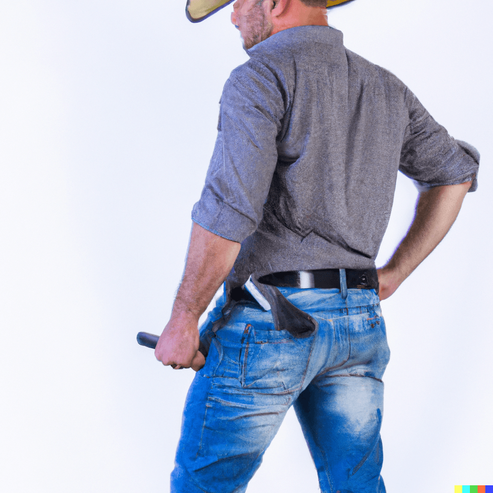

Meet our family
The Killingsworth Vineyard is a family-owned and operated business, dedicated to crafting the finest wines. Our founder, Robert Killingsworth, had a passion for wine that he passed down to his wife, Elizabeth. Today, Elizabeth continues to lead the vineyard with her deep knowledge of winemaking and commitment to excellence. We invite you to visit our vineyard and meet the Killingsworth family. Experience our passion for wine and the commitment to quality that goes into every bottle.
Dr. Chelsea Barren
After suffering a nervous breakdown, this psychiatrist and near-best-selling author moved to Northen California to relax...but she moved next door to the Killingsworth instead.Michael Scarn
This real estate developer from New York arrived unannounced with plans to buy Killingsworth Vineyards and develop it into a high-cost housing community. His boss ordered him to obtain the Killingsworth land at any cost...
